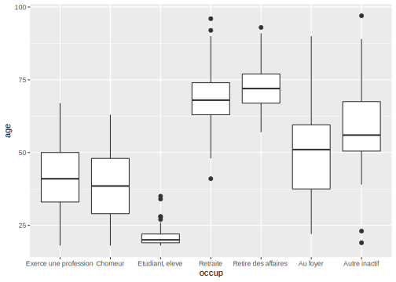
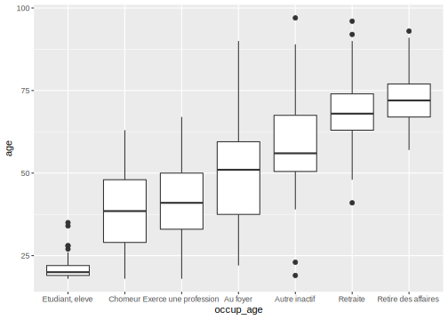
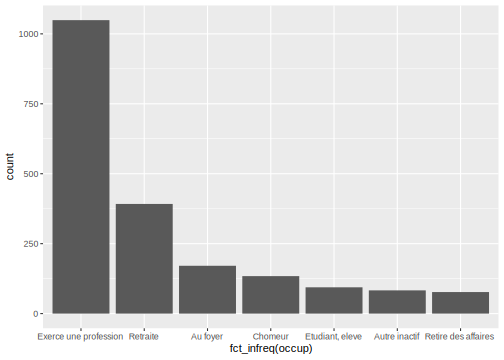
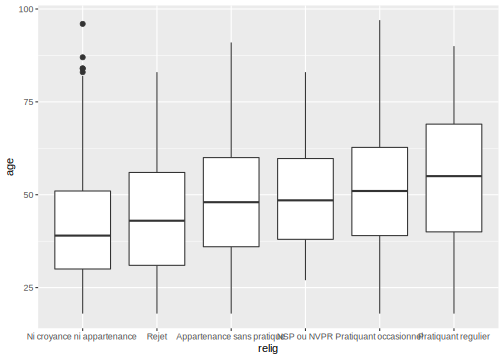

Partie 9 Recoder des variables
9.1 Rappel sur les variables et les vecteurs
Dans R, une variable, en général une colonne d’un tableau de données, est un objet de type vecteur. Un vecteur est un ensemble d’éléments, tous du même type.
On a vu qu’on peut construire un vecteur manuellement de différentes manières :
couleur <- c("Jaune", "Jaune", "Rouge", "Vert")
nombres <- 1:10Mais le plus souvent on manipule des vecteurs faisant partie d’une table importée dans R. Dans ce qui suit on va utiliser le jeu de données d’exemple hdv2003 de l’extension questionr.
library(questionr)
data(hdv2003)Quand on veut accéder à un vecteur d’un tableau de données, on peut utiliser l’opérateur $ :
hdv2003$qualifOn peut facilement créer de nouvelles variables (ou colonnes) dans un tableau de données en utilisant le $ dans une assignation :
hdv2003$minutes.tv <- hdv2003$heures.tv * 60Les vecteurs peuvent être de classes différentes, selon le type de données qu’ils contiennent.
On a ainsi des vecteurs de type integer ou double, qui contiennent respectivement des nombres entiers ou décimaux :
typeof(hdv2003$age)[1] "integer"typeof(hdv2003$heures.tv)[1] "double"Des vecteurs de type character, qui contiennent des chaînes de caractères :
vec <- c("Jaune", "Jaune", "Rouge", "Vert")
typeof(vec)[1] "character"Et des vecteurs de type logical, qui ne peuvent contenir que les valeurs vraie (TRUE) ou fausse (FALSE).
vec <- c(TRUE, FALSE, FALSE, TRUE)
typeof(vec)[1] "logical"On peut convertir un vecteur d’un type en un autre en utilisant les fonctions as.numeric, as.character ou as.logical. Les valeurs qui n’ont pas pu être converties sont automatiquement transformées en NA.
x <- c("1", "2.35", "8.2e+03", "foo")
as.numeric(x)Warning: NAs introduits lors de la conversion automatique[1] 1.00 2.35 8200.00 NAy <- 2:6
as.character(y)[1] "2" "3" "4" "5" "6"On peut sélectionner certains éléments d’un vecteur à l’aide de l’opérateur []. La manière la plus simple est d’indiquer la position des éléments qu’on veut sélectionner :
vec <- c("Jaune", "Jaune", "Rouge", "Vert")
vec[c(1,3)][1] "Jaune" "Rouge"La sélection peut aussi être utilisée pour modifier certains éléments d’un vecteur, par exemple :
vec <- c("Jaune", "Jaune", "Rouge", "Vert")
vec[2] <- "Violet"
vec[1] "Jaune" "Violet" "Rouge" "Vert" 9.2 Tests et comparaison
Un test est une opération logique de comparaison qui renvoie vrai (TRUE) ou faux (FALSE) pour chacun des éléments d’un vecteur.
Parmi les opérateurs de comparaison disponibles, on trouve notamment :
==qui teste l’égalité!=qui teste la différence>,<,<=,>=qui testent la supériorité ou l’infériorité%in%qui teste l’appartenance à un ensemble de valeurs
Exemple le plus simple :
2 == 3[1] FALSE2 != 3[1] TRUEExemple appliqué à un vecteur :
x <- 1:10
x < 5 [1] TRUE TRUE TRUE TRUE FALSE FALSE FALSE FALSE FALSE FALSEOn peut combiner plusieurs tests avec les opérateurs logiques et (&) et ou (|).
Ainsi, si on veut tester qu’une valeur est comprise entre 3 et 6 inclus, on peut faire :
x >= 3 & x <= 6 [1] FALSE FALSE TRUE TRUE TRUE TRUE FALSE FALSE FALSE FALSESi on veut tester qu’une valeur est égale à “Bleu” ou à “Vert”, on peut faire :
vec <- c("Jaune", "Jaune", "Rouge", "Vert")
vec == "Jaune" | vec == "Vert"[1] TRUE TRUE FALSE TRUEÀ noter que dans ce cas, on peut utiliser l’opérateur %in%, qui teste si une valeur fait partie des éléments d’un vecteur :
vec %in% c("Jaune", "Vert")[1] TRUE TRUE FALSE TRUE
Attention, si on souhaite tester si une valeur est égale à NA, faire x == NA ne fonctionnera pas. En effet, fidèle à sa réputation de rigueur informaticienne, pour R NA == NA ne vaut pas TRUE mais… NA.
Pour tester l’égalité avec NA, il faut utiliser la fonction dédiée is.na et faire is.na(x).
Enfin, on peut inverser un test avec l’opérateur non (!) :
!(vec %in% c("Jaune", "Vert"))[1] FALSE FALSE TRUE FALSELes tests sont notamment utilisés par le verbe filter de dplyr (voir section 10.2.2) qui permet de sélectionner certaines lignes d’un tableau de données. On peut ainsi sélectionner les individus ayant entre 20 et 40 ans en filtrant sur la variable age :
filter(hdv2003, age >= 20 & age <= 40)Ou sélectionner les personnes ayant comme catégorie socio-professionnelle Ouvrier specialise ou Ouvrier qualifie en filtrant sur la variable qualif :
filter(hdv2003, qualif %in% c("Ouvrier specialise", "Ouvrier qualifie"))On peut utiliser les tests pour sélectionner certains éléments d’un vecteur. Si on passe un test à l’opérateur de sélection [], seuls les éléments pour lesquels ce test est vrai seront conservés :
x <- c(12, 8, 14, 7, 6, 18)
x[x > 10][1] 12 14 18Enfin, on peut aussi utiliser les tests et la sélection pour modifier les valeurs d’un vecteur. Ainsi, si on assigne une valeur à une sélection, les éléments pour lesquels le test est vrai sont remplacés par cette valeur :
x <- c(12, 8, 14, 7, 6, 18)
x[x > 10] <- 100
x[1] 100 8 100 7 6 100En utilisant cette assignation via un test, on peut effectuer des recodages de variables. Soit le vecteur suivant :
vec <- c("Femme", "Homme", "Femme", "Garçon")Si on souhaite recoder la modalité “Garçon” en “Homme”, on peut utiliser la syntaxe suivante :
vec[vec == "Garçon"] <- "Homme"
vec[1] "Femme" "Homme" "Femme" "Homme"Cette synatxe est tout à fait valable et couramment utilisée, cependant dans la section suivante on va voir différentes fonctions qui facilitent ces opérations de recodage.
9.3 Recoder une variable qualitative
Pour rappel, on appelle variable qualitative une variable pouvant prendre un nombre limité de modalités (de valeurs possibles).
9.3.1 Facteurs et forcats
Dans R, les variables qualitatives peuvent être de deux types : ou bien des vecteurs de type character (des chaînes de caractères), ou bien des factor (facteurs). Si vous utilisez les fonctions des extensions du tidyverse comme readr, readxl ou haven pour importer vos données, vos variables qualitatives seront importées sous forme de character. Mais dans les autres cas elles se retrouveront souvent sous forme de factor. C’est le cas dans notre jeu de données d’exemple :
class(hdv2003$qualif)[1] "factor"Les facteurs sont un type de variable ne pouvant prendre qu’un nombre défini de modalités nommés levels :
levels(hdv2003$qualif)[1] "Ouvrier specialise" "Ouvrier qualifie"
[3] "Technicien" "Profession intermediaire"
[5] "Cadre" "Employe"
[7] "Autre" Ceci complique les opérations de recodage car du coup l’opération suivante, qui tente de modifier une modalité de la variable, aboutit à un avertissement, et l’opération n’est pas effectuée :
hdv2003$qualif[hdv2003$qualif == "Ouvrier specialise"] <- "Ouvrier"Warning in `[<-.factor`(`*tmp*`, hdv2003$qualif == "Ouvrier specialise", :
invalid factor level, NA generatedforcats est une extension facilitant la manipulation des variables qualitatives, qu’elles soient sous forme de vecteurs character ou de facteurs. Elle fait partie du tidyverse, et est donc automatiquement chargée par :
library(tidyverse)9.3.2 Modifier les modalités d’une variable qualitative
Une opération courante consiste à modifier les valeurs d’une variable qualitative, que ce soit pour avoir des intitulés plus courts ou plus clairs ou pour regrouper des modalités entre elles.
Il existe plusieurs possibilités pour effectuer ce type de recodage, mais ici on va utiliser la fonction fct_recode de l’extension forcats. Celle-ci prend en argument une liste de recodages sous la forme "Nouvelle valeur" = "Ancienne valeur".
Un exemple :
f <- c("Pomme", "Poire", "Pomme", "Cerise")
f <- fct_recode(f,
"Fraise" = "Pomme",
"Ananas" = "Poire")
f[1] Fraise Ananas Fraise Cerise
Levels: Cerise Ananas FraiseAutre exemple sur une “vraie” variable :
freq(hdv2003$qualif) n % val%
Ouvrier specialise 0 0.0 0.0
Ouvrier qualifie 292 14.6 20.1
Technicien 86 4.3 5.9
Profession intermediaire 160 8.0 11.0
Cadre 260 13.0 17.9
Employe 594 29.7 41.0
Autre 58 2.9 4.0
NA 550 27.5 NAhdv2003$qualif5 <- fct_recode(hdv2003$qualif,
"Ouvrier" = "Ouvrier specialise",
"Ouvrier" = "Ouvrier qualifie",
"Interm" = "Technicien",
"Interm" = "Profession intermediaire")freq(hdv2003$qualif5) n % val%
Ouvrier 292 14.6 20.1
Interm 246 12.3 17.0
Cadre 260 13.0 17.9
Employe 594 29.7 41.0
Autre 58 2.9 4.0
NA 550 27.5 NAAttention, les anciennes valeurs saisies doivent être exactement égales aux valeurs des modalités de la variable recodée : toute différence d’accent ou d’espace fera que ce recodage ne sera pas pris en compte. Dans ce cas, forcats affiche un avertissement nous indiquant qu’une valeur saisie n’a pas été trouvée dans les modalités de la variable :
hdv2003$qualif_test <- fct_recode(hdv2003$qualif,
"Ouvrier" = "Ouvrier spécialisé",
"Ouvrier" = "Ouvrier qualifié")Warning: Unknown levels in `f`: Ouvrier spécialisé, Ouvrier qualifiéSi on souhaite recoder une modalité de la variable en NA, il faut (contre intuitivement) lui assigner la valeur NULL :
hdv2003$qualif_rec <- fct_recode(hdv2003$qualif, NULL = "Autre")freq(hdv2003$qualif_rec) n % val%
Ouvrier specialise 0 0.0 0.0
Ouvrier qualifie 292 14.6 21.0
Technicien 86 4.3 6.2
Profession intermediaire 160 8.0 11.5
Cadre 260 13.0 18.7
Employe 594 29.7 42.7
NA 608 30.4 NAÀ l’inverse, si on souhaite recoder les NA d’une variable, on utilisera la fonction fct_explicit_na, qui convertit toutes les valeurs manquantes (NA) d’un facteur en une modalité spécifique :
hdv2003$qualif_rec <- fct_explicit_na(hdv2003$qualif, na_level = "(Manquant)")freq(hdv2003$qualif_rec) n % val%
Ouvrier specialise 0 0.0 0.0
Ouvrier qualifie 292 14.6 14.6
Technicien 86 4.3 4.3
Profession intermediaire 160 8.0 8.0
Cadre 260 13.0 13.0
Employe 594 29.7 29.7
Autre 58 2.9 2.9
(Manquant) 550 27.5 27.5D’autres fonctions sont proposées par forcats pour faciliter certains recodage, comme fct_collapse, qui propose une autre syntaxe pratique quand on doit regrouper ensemble des modalités :
hdv2003$qualif_rec <- fct_collapse(hdv2003$qualif,
"Ouvrier" = c("Ouvrier specialise", "Ouvrier qualifie"),
"Interm" = c("Technicien", "Profession intermediaire"))freq(hdv2003$qualif_rec) n % val%
Ouvrier 292 14.6 20.1
Interm 246 12.3 17.0
Cadre 260 13.0 17.9
Employe 594 29.7 41.0
Autre 58 2.9 4.0
NA 550 27.5 NAfct_other, qui regroupe une liste de modalités en une seule modalité “Other” :
hdv2003$qualif_rec <- fct_other(hdv2003$qualif,
drop = c("Ouvrier specialise", "Ouvrier qualifie",
"Cadre", "Autre"))freq(hdv2003$qualif_rec) n % val%
Technicien 86 4.3 5.9
Profession intermediaire 160 8.0 11.0
Employe 594 29.7 41.0
Other 610 30.5 42.1
NA 550 27.5 NAfct_lump, qui regroupe automatiquement les modalités les moins fréquentes en une seule modalité “Other” (avec possibilité d’indiquer des seuils de regroupement) :
hdv2003$qualif_rec <- fct_lump(hdv2003$qualif)freq(hdv2003$qualif_rec) n % val%
Ouvrier qualifie 292 14.6 20.1
Profession intermediaire 160 8.0 11.0
Cadre 260 13.0 17.9
Employe 594 29.7 41.0
Other 144 7.2 9.9
NA 550 27.5 NA9.3.2.1 Interface graphique de recodage
L’extension questionr propose une interface graphique facilitant le recodage des modalités d’une variable qualitative. L’objectif est de permettre à l’utilisateur de saisir les nouvelles valeurs dans un formulaire, et de générer ensuite le code R correspondant au recodage indiqué.
Pour utiliser cette interface, sous RStudio vous pouvez aller dans le menu Addins (présent dans la barre d’outils principale) puis choisir Levels recoding. Sinon, vous pouvez lancer dans la console la fonction irec() en lui passant comme paramètre la variable à recoder.

Interface graphique de irec
L’interface se compose de trois onglets : l’onglet Variable et paramètres vous permet de sélectionner la variable à recoder, le nom de la nouvelle variable et d’autres paramètres, l’onglet Recodages vous permet de saisir les nouvelles valeurs des modalités, et l’onglet Code et résultat affiche le code R correspondant ainsi qu’un tableau permettant de vérifier les résultats.
Une fois votre recodage terminé, cliquez sur le bouton Done et le code R sera inséré dans votre script R ou affiché dans la console.
Attention, cette interface est prévue pour ne pas modifier vos données. C’est donc à vous d’exécuter le code généré pour que le recodage soit réellement effectif.
9.3.3 Ordonner les modalités d’une variable qualitative
L’avantage des facteurs (par rapport aux vecteurs de type character) est que leurs modalités peuvent être ordonnées, ce qui peut faciliter la lecture de tableaux ou graphiques.
On peut ordonner les modalités d’un facteur manuellement, par exemple avec la fonction fct_relevel() de l’extension forcats :
hdv2003$qualif_rec <- fct_relevel(hdv2003$qualif,
"Cadre", "Profession intermediaire", "Technicien",
"Employe", "Ouvrier qualifie", "Ouvrier specialise",
"Autre")freq(hdv2003$qualif_rec) n % val%
Cadre 260 13.0 17.9
Profession intermediaire 160 8.0 11.0
Technicien 86 4.3 5.9
Employe 594 29.7 41.0
Ouvrier qualifie 292 14.6 20.1
Ouvrier specialise 0 0.0 0.0
Autre 58 2.9 4.0
NA 550 27.5 NAUne autre possibilité est d’ordonner les modalités d’un facteur selon les valeurs d’une autre variable. Par exemple, si on représente le boxplot de la répartition de l’âge selon le statut d’occupation :
library(ggplot2)
ggplot(hdv2003) +
geom_boxplot(aes(x=occup, y=age))
Le graphique pourrait être plus lisible si les modalités étaient triées par âge median croissant. Ceci est possible en utilisant fct_reorder. Celle-ci prend 3 arguments : le facteur à réordonner, la variable dont les valeurs doivent être utilisées pour ce réordonnancement, et enfin une fonction à appliquer à cette deuxième variable.
hdv2003$occup_age <- fct_reorder(hdv2003$occup, hdv2003$age, median)
ggplot(hdv2003) +
geom_boxplot(aes(x = occup_age, y = age))
On peut aussi effectuer le réordonnancement directement dans l’appel à ggplot2, sans créer de nouvelle variable :
ggplot(hdv2003) +
geom_boxplot(aes(x = fct_reorder(occup, age, median),
y = age))Lorsqu’on effectue un diagramme en barres avec geom_bar, on peut aussi réordonner les modalités selon leurs effectifs à l’aide de fct_infreq :
ggplot(hdv2003) +
geom_bar(aes(x = fct_infreq(occup)))
9.3.3.1 Interface graphique
questionr propose une interface graphique afin de faciliter les opérations de réordonnancement manuel. Pour la lancer, sélectionner le menu Addins puis Levels ordering, ou exécuter la fonction iorder() en lui passant comme paramètre le facteur à réordonner.
Interface graphique de iorder
Le fonctionnement de l’interface est similaire à celui de l’interface de recodage. Vous pouvez réordonner les modalités en les faisant glisser avec la souris, puis récupérer et exécuter le code R généré.
9.4 Combiner plusieurs variables
Parfois, on veut créer une nouvelle variable en partant des valeurs d’une ou plusieurs autres variables. Dans ce cas on peut utiliser les fonctions if_else pour les cas les plus simples, ou case_when pour les cas plus complexes. Ces deux fonctions sont incluses dans l’extension dplyr, qu’il faut donc avoir chargé précédemment.
9.4.1 if_else
if_else prend trois arguments : un test, une valeur à renvoyer si le test est vrai, et une valeur à renvoyer si le test est faux.
Voici un exemple simple :
v <- c(12, 14, 8, 16)
if_else(v > 10, "Supérieur à 10", "Inférieur à 10")[1] "Supérieur à 10" "Supérieur à 10" "Inférieur à 10" "Supérieur à 10"La fonction devient plus intéressante avec des tests combinant plusieurs variables. Par exemple, imaginons qu’on souhaite créer une nouvelle variable indiquant les hommes de plus de 60 ans :
hdv2003$statut <- if_else(hdv2003$sexe == "Homme" & hdv2003$age > 60,
"Homme de plus de 60 ans",
"Autre")freq(hdv2003$statut) n % val%
Autre 1778 88.9 88.9
Homme de plus de 60 ans 222 11.1 11.19.4.2 case_when
case_when est une génération du if_else qui permet d’indiquer plusieurs tests et leurs valeurs associées.
Imaginons qu’on souhaite créer une nouvelle variable permettant d’identifier les hommes de plus de 60 ans, les femmes de plus de 60 ans, et les autres. On peut utiliser la syntaxe suivante :
hdv2003$statut <- case_when(
hdv2003$age > 60 & hdv2003$sexe == "Homme" ~ "Homme de plus de 60 ans",
hdv2003$age > 60 & hdv2003$sexe == "Femme" ~ "Femme de plus de 60 ans",
TRUE ~ "Autre")freq(hdv2003$statut) n % val%
Autre 1512 75.6 75.6
Femme de plus de 60 ans 266 13.3 13.3
Homme de plus de 60 ans 222 11.1 11.1case_when prend en arguments une série d’instructions sous la forme condition ~ valeur. Il les exécute une par une, et dès qu’une condition est vraie, il renvoie la valeur associée.
La clause TRUE ~ "Autre" permet d’assigner une valeur à toutes les lignes pour lesquelles aucune des conditions précédentes n’est vraie.
Attention : comme les conditions sont testées l’une après l’autre et que la valeur renvoyée est celle correspondant à la première condition vraie, l’ordre de ces conditions est très important. Il faut absolument aller du plus spécifique au plus général.
Par exemple le recodage suivant ne fonctionne pas :
hdv2003$statut <- case_when(
hdv2003$sexe == "Homme" ~ "Homme",
hdv2003$sexe == "Homme" & hdv2003$age > 60 ~ "Homme de plus de 60 ans",
TRUE ~ "Autre")freq(hdv2003$statut) n % val%
Autre 1101 55 55
Homme 899 45 45Comme la condition sexe == "Homme" est plus générale que sexe == "Homme" & age > 60, cette deuxième condition n’est jamais testée ! On n’obtiendra jamais la valeur correspondante.
Pour que ce recodage fonctionne il faut donc changer l’ordre des conditions pour aller du plus spécifique au plus général :
hdv2003$statut <- case_when(
hdv2003$sexe == "Homme" & hdv2003$age > 60 ~ "Homme de plus de 60 ans",
hdv2003$sexe == "Homme" ~ "Homme",
TRUE ~ "Autre")freq(hdv2003$statut) n % val%
Autre 1101 55.0 55.0
Homme 677 33.9 33.9
Homme de plus de 60 ans 222 11.1 11.19.5 Découper une variable numérique en classes
Une autre opération relativement courante consiste à découper une variable numérique en classes. Par exemple, on voudra transformer une variable revenu contenant le revenu mensuel en une variable qualitative avec des catégories Moins de 500 euros, 500-1000 euros, etc.
On utilise pour cela la fonction cut() :
hdv2003$agecl <- cut(hdv2003$age, breaks = 5)freq(hdv2003$agecl) n % val%
(17.9,33.8] 454 22.7 22.7
(33.8,49.6] 628 31.4 31.4
(49.6,65.4] 556 27.8 27.8
(65.4,81.2] 319 16.0 16.0
(81.2,97.1] 43 2.1 2.1Si on donne un nombre entier à l’argument breaks, un nombre correspondant de classes d’amplitudes égales sont automatiquement calculées. Il est souvent préférable cependant d’avoir des limites “rondes”, on peut alors spécifier ces dernières manuellement en passant un vecteur à breaks :
hdv2003$agecl <- cut(hdv2003$age,
breaks = c(18, 25, 35, 45, 55, 65, 97),
include.lowest = TRUE)freq(hdv2003$agecl) n % val%
[18,25] 191 9.6 9.6
(25,35] 338 16.9 16.9
(35,45] 390 19.5 19.5
(45,55] 414 20.7 20.7
(55,65] 305 15.2 15.2
(65,97] 362 18.1 18.1Ici on a été obligé d’ajouter l’argument include.lowest = TRUE car sinon la valeur 18 n’aurait pas été incluse, et on aurait eu des valeurs manquantes.
9.5.1 Interface graphique
Comme l’utilisation des arguments de cut n’est pas toujours très intuitive, l’extension questionr propose une interface graphique facilitant cette opération de découpage en classes d’une variable numérique.
Pour lancer cette interface, sous RStudio ouvrir le menu Addins et sélectionner Numeric range dividing, ou exécuter la fonction icut() dans la console en lui passant comme argument la variable quantitative à découper.

Interface graphique de icut
Vous pouvez alors choisir la variable à découper dans l’onglet Variable et paramètres, indiquer les limites de vos classes ainsi que quelques options complémentaires dans l’onglet Découpage en classes, et vérifier le résultat dans l’onglet Code et résultat. Une fois le résultat satisfaisant, cliquez sur Done : si vous êtes sous RStudio le code généré sera directement inséré dans votre script actuel à l’emplacement du curseur. Sinon, ce code sera affiché dans la console et vous pourrez le copier/coller pour l’inclure dans votre script.
Attention, cette interface est prévue pour ne pas modifier vos données. C’est donc à vous d’exécuter le code généré pour que le découpage soit réellement effectif.
9.6 Exercices
9.6.1 Préparation
Pour la plupart de ces exercices, on a besoin des extensions forcats et questionr, et du jeu de données d’exemple hdv2003.
library(forcats)
library(questionr)
data(hdv2003)9.6.2 Vecteurs et tests
Exercice 1.1
Construire le vecteur suivant :
x <- c("12", "3.5", "421", "2,4")Et le convertir en vecteur numérique. Que remarquez-vous ?
as.numeric(x)
## Un nombre avec une virgule comme séparateur décimal
## renvoie NAExercice 1.2
Construire le vecteur suivant :
x <- c(1, 20, 21, 15.5, 14, 12, 8)- Écrire le test qui indique si les éléments du vecteur sont strictement supérieurs à 15.
- Utiliser ce test pour extraire du vecteur les éléments correspondants.
x > 15
x[x > 15]Exercice 1.3
Le code suivant génère un vecteur de 1000 nombres aléatoires compris entre 0 et 10 :
x <- runif(1000, 0, 10)Combien d’éléments de ce vecteur sont compris entre 2 et 4 ?
## Possibilité 1
length(x[x >= 2 & x <= 4])
## Possibilité 2
table(x >= 2 & x <= 4)9.6.3 Recodages de variable qualitative
Exercice 2.1
Construire un vecteur f à l’aide du code suivant :
f <- c("Jan", "Jan", "Fev", "Juil")Recoder le vecteur à l’aide de la fonction fct_recode pour obtenir le résultat suivant :
[1] Janvier Janvier Février Juillet
Levels: Février Janvier Juilletf <- fct_recode(f,
"Janvier" = "Jan",
"Février" = "Fev",
"Juillet" = "Juil")
fExercice 2.2
À l’aide de l’interface graphique de questionr, recoder la variable relig du jeu de données hdv2003 pour obtenir le tri à plat suivant (il se peut que l’ordre des modalités dans le tri à plat soit différent) :
n % val%
Pratiquant 708 35.4 35.4
Appartenance 760 38.0 38.0
Ni croyance ni appartenance 399 20.0 20.0
Rejet 93 4.7 4.7
NSP 40 2.0 2.0hdv2003$relig_rec <- fct_recode(hdv2003$relig,
"Pratiquant" = "Pratiquant regulier",
"Pratiquant" = "Pratiquant occasionnel",
"Appartenance" = "Appartenance sans pratique",
"NSP" = "NSP ou NVPR")
freq(hdv2003$relig_rec)Exercice 2.3
À l’aide de l’interface graphique de questionr, recoder la variable nivetud pour obtenir le tri à plat suivant (il se peut que l’ordre des modalités dans le tri à plat soit différent) :
n % val%
N'a jamais fait d'etudes 39 2.0 2.1
Études primaires 427 21.3 22.6
1er cycle 204 10.2 10.8
2eme cycle 183 9.2 9.7
Enseignement technique ou professionnel 594 29.7 31.5
Enseignement superieur 441 22.1 23.4
NA 112 5.6 NAhdv2003$nivetud_rec <- fct_recode(hdv2003$nivetud,
"Études primaires" = "A arrete ses etudes, avant la derniere annee d'etudes primaires",
"Études primaires" = "Derniere annee d'etudes primaires",
"Enseignement technique ou professionnel" = "Enseignement technique ou professionnel court",
"Enseignement technique ou professionnel" = "Enseignement technique ou professionnel long",
"Enseignement superieur" = "Enseignement superieur y compris technique superieur")
freq(hdv2003$nivetud_rec)Toujours à l’aide de l’interface graphique, réordonner les modalités de cette variable recodée pour obtenir le tri à plat suivant :
n % val%
Enseignement superieur 441 22.1 23.4
Enseignement technique ou professionnel 594 29.7 31.5
2eme cycle 183 9.2 9.7
1er cycle 204 10.2 10.8
Études primaires 427 21.3 22.6
N'a jamais fait d'etudes 39 2.0 2.1
NA 112 5.6 NAhdv2003$nivetud_rec <- factor(hdv2003$nivetud_rec,
levels = c("Enseignement superieur", "Enseignement technique ou professionnel", "2eme cycle", "1er cycle", "Études primaires", "N'a jamais fait d'etudes"))
freq(hdv2003$nivetud_rec)Exercice 2.4
À l’aide de la fonction fct_reorder, trier les modalités de la variable relig du jeu de données hdv2003 selon leur âge médian.
Vérifier en générant le boxplot suivant :

hdv2003$relig <- fct_reorder(hdv2003$relig, hdv2003$age, median)
ggplot(hdv2003) + geom_boxplot(aes(x = relig, y = age))9.6.4 Combiner plusieurs variables
Exercice 3.1
À l’aide de la fonction if_else, créer une nouvelle variable cinema_bd permettant d’identifier les personnes qui vont au cinéma et déclarent lire des bandes dessinées.
Vous devriez obtenir le tri à plat suivant pour cette nouvelle variable :
n % val%
Autre 1971 98.6 98.6
Cinéma et BD 29 1.5 1.5hdv2003$cinema_bd <- if_else(
hdv2003$cinema == "Oui" & hdv2003$lecture.bd == "Oui",
"Cinéma et BD",
"Autre")
freq(hdv2003$cinema_bd)Exercice 3.2
À l’aide de la fonction case_when, créer une nouvelle variable ayant les modalités suivantes :
- Homme ayant plus de 2 frères et soeurs
- Femme ayant plus de 2 frères et soeurs
- Autre
Vous devriez obtenir le tri à plat suivant :
n % val%
Autre 1001 50.0 50.0
Femme ayant plus de 2 frères et soeurs 546 27.3 27.3
Homme ayant plus de 2 frères et soeurs 453 22.7 22.7hdv2003$groupe <- case_when(
hdv2003$sexe == "Homme" & hdv2003$freres.soeurs > 2 ~ "Homme ayant plus de 2 frères et soeurs",
hdv2003$sexe == "Femme" & hdv2003$freres.soeurs > 2 ~ "Femme ayant plus de 2 frères et soeurs",
TRUE ~ "Autre"
)
freq(hdv2003$groupe)Exercice 3.3
À l’aide de la fonction case_when, créer une nouvelle variable ayant les modalités suivantes :
- Homme de plus de 30 ans
- Homme de plus de 40 ans satisfait par son travail
- Femme pratiquant le sport ou le bricolage
- Autre
Vous devriez obtenir le tri à plat suivant :
n % val%
Autre 714 35.7 35.7
Femme pratiquant le sport ou le bricolage 549 27.5 27.5
Homme de plus de 30 ans 610 30.5 30.5
Homme de plus de 40 ans satisfait par son travail 127 6.3 6.3hdv2003$groupe <- case_when(
hdv2003$sexe == "Homme" & hdv2003$age > 40 & hdv2003$trav.satisf == "Satisfaction" ~ "Homme de plus de 40 ans satisfait par son travail",
hdv2003$sexe == "Homme" & hdv2003$age > 30 ~ "Homme de plus de 30 ans",
hdv2003$sexe == "Femme" & (hdv2003$sport == "Oui" | hdv2003$bricol == "Oui") ~ "Femme pratiquant le sport ou le bricolage",
TRUE ~ "Autre"
)
freq(hdv2003$groupe)9.6.5 Découper une variable numérique
Exercice 4.1
Dans le jeu de données hdv2003, découper la variable heures.tv en classes de manière à obtenir au final le tri à plat suivant :
n % val%
[0,1] 684 34.2 34.3
(1,2] 535 26.8 26.8
(2,4] 594 29.7 29.8
(4,6] 138 6.9 6.9
(6,12] 44 2.2 2.2
NA 5 0.2 NAhdv2003$tv_cl <- cut(hdv2003$heures.tv,
include.lowest=TRUE,
right=TRUE,
breaks=c(0, 1, 2, 4, 6, 12))
freq(hdv2003$tv_cl)